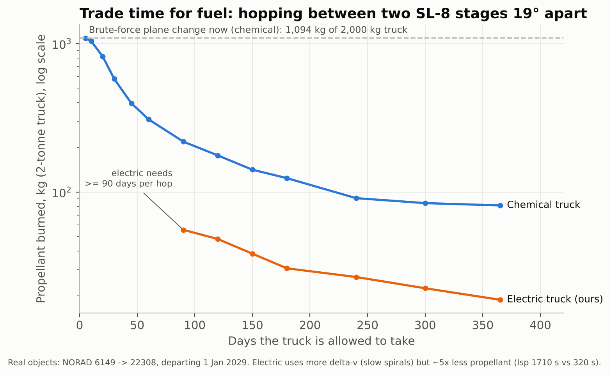
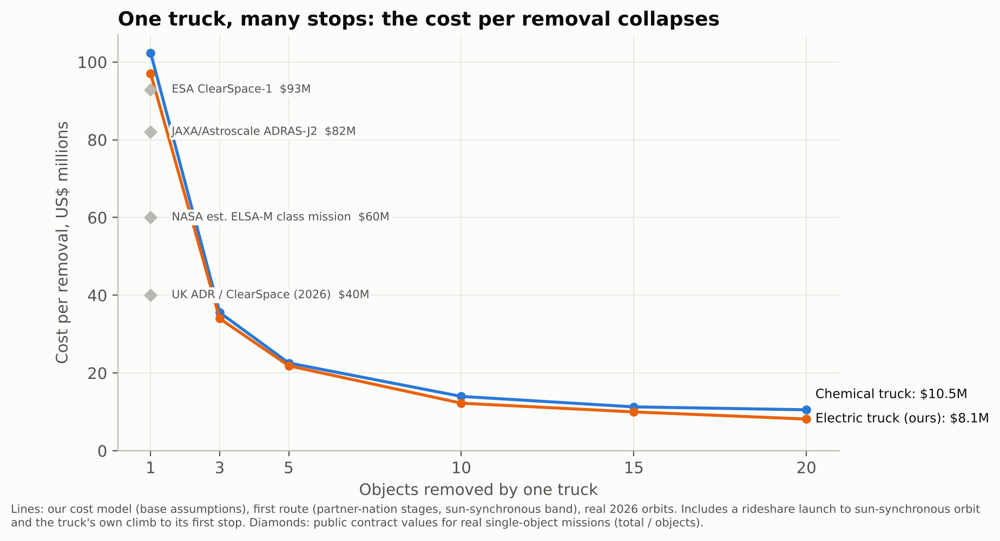

Dead satellites and old rocket stages keep colliding and breaking into fragments. ESA says the debris population would keep growing even with zero new launches. The FCC now requires disposal within five years (Part 100, July 2026), with only a 0.9 success requirement, so some satellites will always fail and stay up. Today, removing one object is a custom mission costing tens of millions of dollars.
Earth's equatorial bulge (the "J2" effect) slowly twists every orbit's plane, at a speed set by altitude and tilt. Twisting a plane with a rocket is brutally expensive; waiting for Earth to do it is almost free. Our electric "truck" parks at a different altitude, waits until its plane lines up with the next dead object, hops over, and attaches a small deorbit kit that drops the object into the atmosphere. Then it drives on. We don't chase the junk; we let Earth bring it to us.
The multi-target drift idea itself is published (GTOC9 2017; Di Carlo et al. 2017; Iskender et al. 2026). Our contribution is the priced, customer-facing version on today's catalogue. Costs are model estimates. Our biggest unknowns are truck hardware cost and deorbit-kit cost, and capturing tumbling, unprepared rocket stages is still undemonstrated (first attempt: Astroscale ADRAS-J2, 2027–28).

Hopping between two real SL-8 stages 19° apart: about 1,094 kg of propellant if done now by brute force, about 19 kg if the electric truck waits a year.

Modelled cost per removal, launch included, falls as one truck makes more stops (base assumptions), compared with public single-object contract values.
A: Constellation sweep for operators with failed satellites (e.g. 24 dead first-generation Iridium). B: Rocket-body cleanup for agencies. First route: 10 US, Indian and French stages in the sun-synchronous band, where rideshares already go. Later: 142 Soviet-era SL-8 stages at 83° ($13.0M each, with Russia's consent).
Sources: ESA DISCOSweb statistics (14 Oct 2026); FCC 22-74 and FCC 26-47; ESA/ClearSpace, JAXA/Astroscale, UK Space Agency contract announcements; NASA OTPS (2023); Petropoulos et al., Acta Futura 11 (2018); CelesTrak GP data. Full bibliography and code: github.com/brandongraff-dev/deca2026.